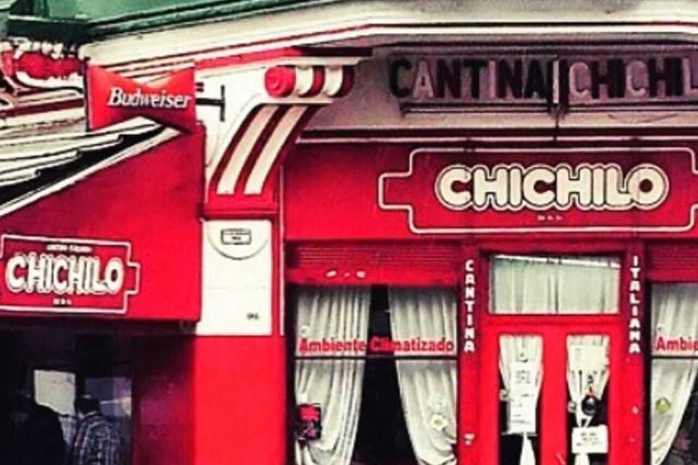

Cantina Chichilo de Buenos Aires

Una familia para servirlo
Desde hace 65 años al servicio del buen comer. Atendido por sus dueños en un barrio de famosos "La Paternal". Además la producción de POL-KA la eligió para la aertura de la novela de Ilusiones y El Sodero de mi Vida. El lugar favorito de Maradona
1956 - 2021